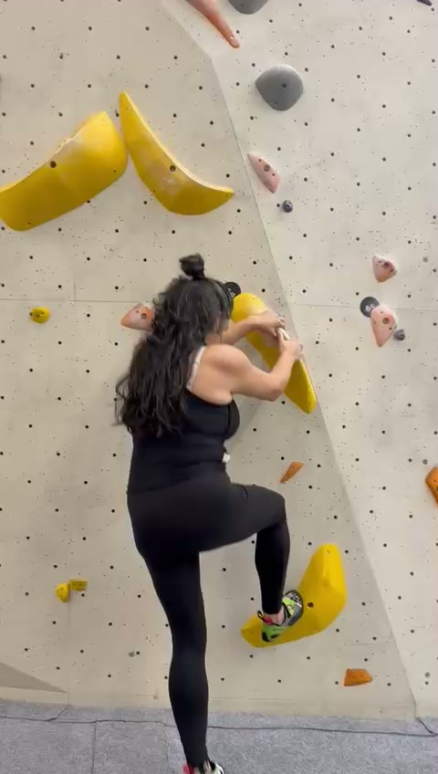
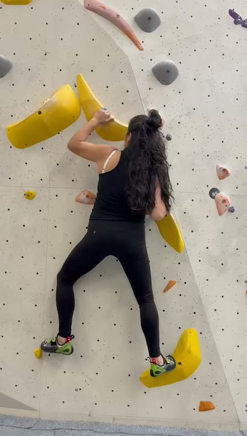
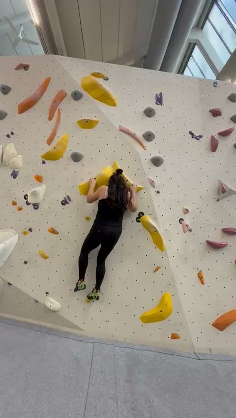
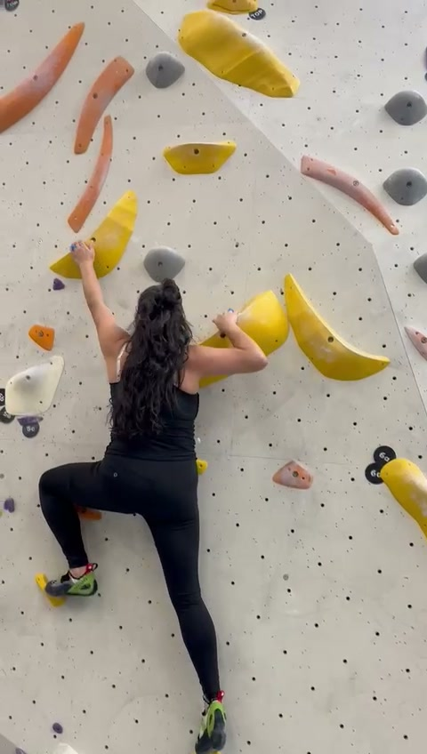
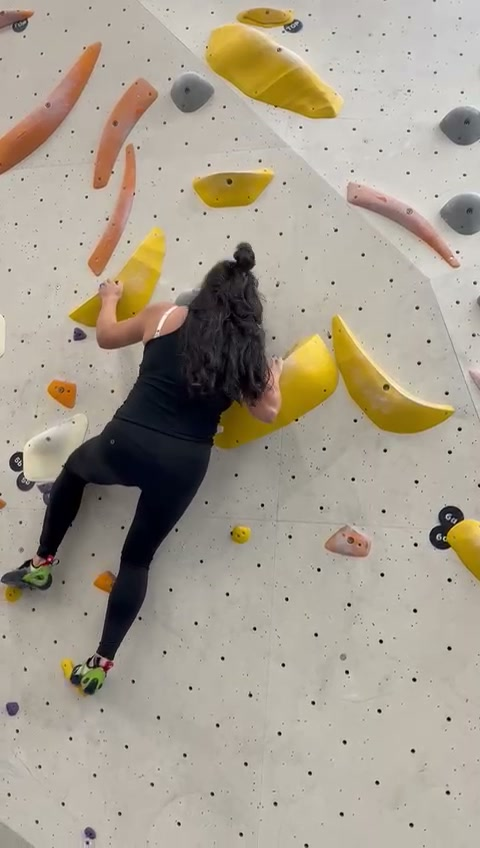
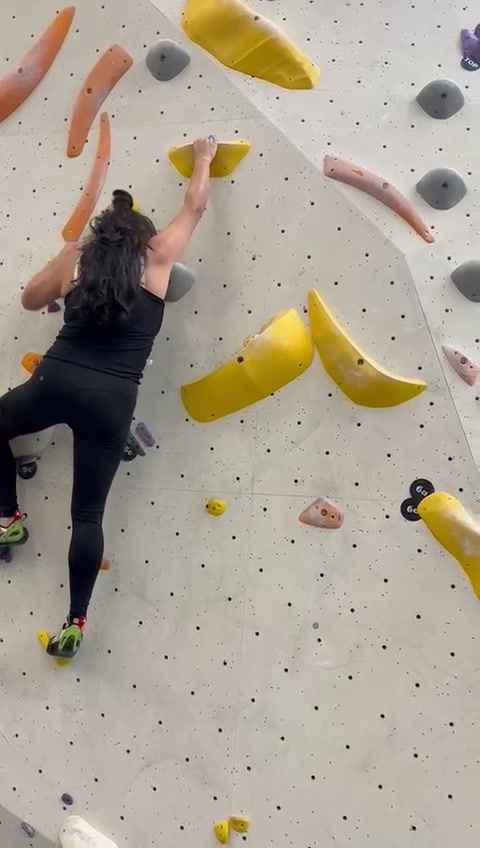
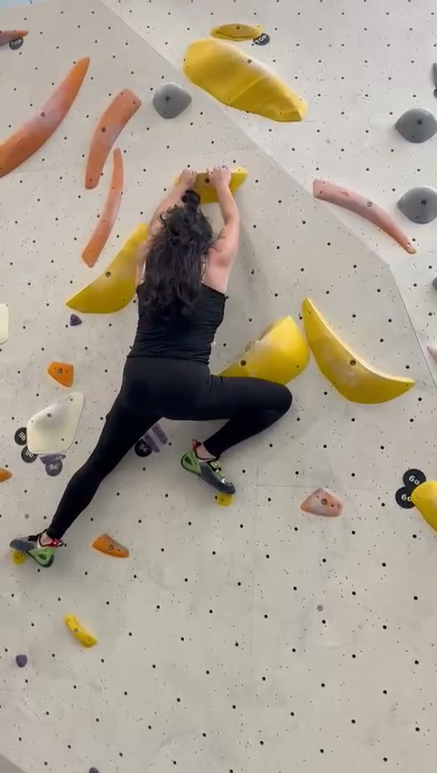
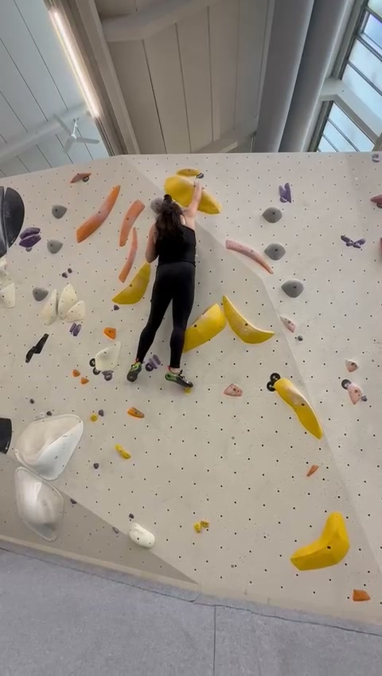
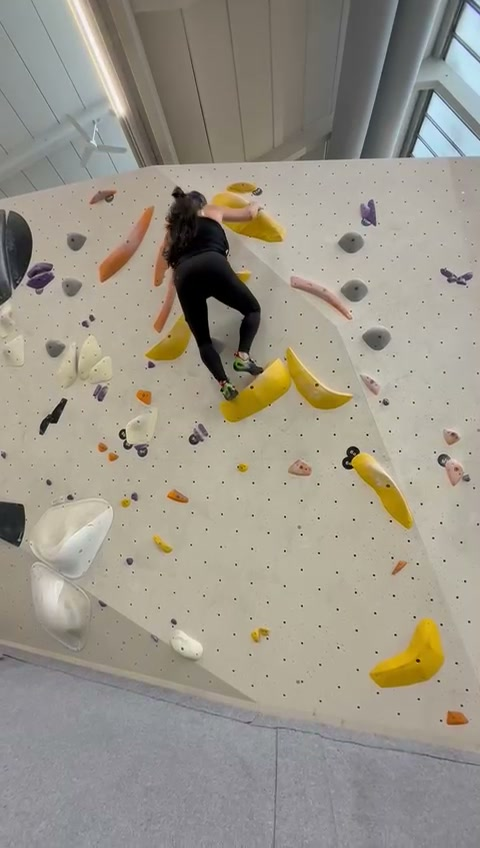
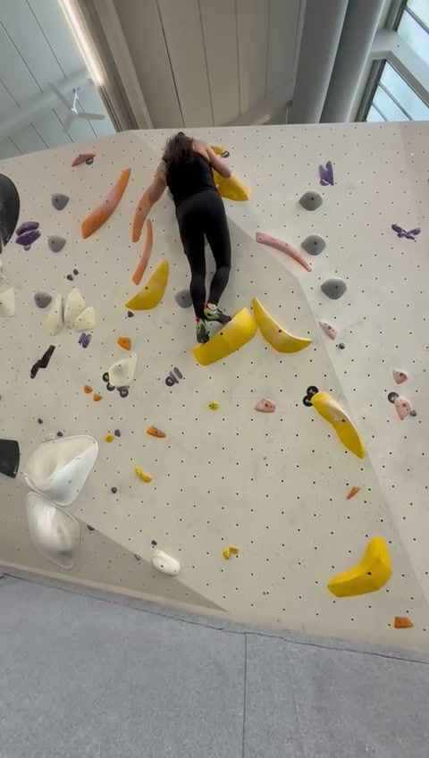

Professional frame-by-frame biomechanical breakdown focusing on leg drive mechanics, high-step flexibility, and movement efficiency across a 36-second bouldering problem.
Aggregate ratings across the entire climb sequence
10 key frames extracted at even intervals across the 36-second climb

Left leg: High-step in progress — hip flexion ~100–110°, knee sharply flexed ~60–70°, heel drawn toward glute. Inside-edge toe placement on a chest-height hold. Right leg: Standing/loaded leg in partial squat — hip ~40–50° flexion, knee ~100–110°. Textbook setup for weight transfer and upward drive.
Both hands on yellow holds at head height. Right arm locked off at ~80–90° (open-hand wrap on volume lip). Left arm at ~70–80° (side-pull grip). Compact positioning — shoulder-width apart. Significant load on both arms during the high-step phase.
Torso rigid and upright with no lumbar hyperextension. Strong anti-rotation stability — no barn-dooring despite the asymmetric leg position. Hip flexors (iliopsoas, rectus femoris) under high demand for the high-step.
COG positioned close to the wall over the right (standing) foot — biomechanically sound for pre-drive phase. Slightly low position indicates drive hasn't initiated yet. Ready to transfer weight onto the high-stepped left foot.
High-step to chest height shows excellent hip flexion ROM (>100°). Square/frontal orientation is appropriate for the hold layout. Coaching cue: Place the high-step foot quickly to minimize time in bent-arm loaded position — reduce forearm pump early in the problem.

Wide stance (~1.2–1.5× shoulder width). Left: hip flexion ~30–40°, abduction ~30°, knee ~120–130°. Right: hip flexion ~35–45°, abduction ~25–30°, knee ~110–120°. Both feet on inside-edge placements on large yellow volumes — broad triangular base of support.
Left arm nearly extended (~130–140° elbow) — hanging on skeletal structure for energy conservation. Right arm more bent (~90–100°) in moderate lock-off. Open-hand palm/wrap grips on yellow scoops. Arms spread wider than shoulders, creating rectangular four-point frame.
Sustained core tension keeping hips pressed to wall. Wide stance demands significant adductor and hip stabilizer activation. No visible lateral lean or rotation — obliques and spinal erectors maintaining neutral trunk.
COG centered between both feet, close to the wall. Wide base provides excellent lateral stability. At approximately hip level, well within the support polygon. This is an energy-efficient rest/planning position.
Textbook rest/assessment position — weight distributed across four points, using large volumes for generous foot placements. Coaching cue: Straighten the right arm further to shift more load to skeleton and reduce bicep/forearm fatigue during the pause.

Left: hip ~60–70° flexion with slight abduction, knee ~80–90° — compressed and loaded, preparing to push. Right: hip ~50–60° flexion, knee ~90–100°, inside-edge placement. Moderate shoulder-width stance. Both feet actively loaded — no flagging.
Both hands on yellow holds at head height with elbows bent ~70–90°. Partial lock-off on both arms simultaneously — this is a high-energy position with both biceps and forearms loaded. Open-hand/palming grips on volume features.
Compact position requires significant core engagement — rectus abdominis and hip flexors preventing hip sag. Strong anti-extension control with no visible torso rotation or collapse. Pelvis stable despite the compressed loading.
COG close to wall with hips tight against the surface. The compressed bent-arm/bent-leg position stores potential energy in the lower body for upcoming leg drive. Weight driven through the feet effectively.
"Coil before spring" — the bent legs store potential for explosive leg drive. This is a transition/setup stance between sequences. Coaching cue: Minimize time in this double-bent-arm position. Either hang on straighter arms or move through dynamically to conserve forearm endurance.

Left (high-step): Hip in deep flexion ~100–120°, knee sharply flexed ~50–60°, foot at hip-to-chest height on inside-edge. Demanding position requiring excellent ROM and quad engagement. Right (drive): Standing leg bearing majority of weight — hip ~30–40° flexion, knee ~130–140°. Wide vertical separation between feet.
Left arm: Extended high to ~150–160° — near full reach for the next hold (open-hand sloper grip). Right arm: Deep lock-off at ~60–80° on a yellow scoop — substantial muscular work stabilizing the body. Classic asymmetric lock-off and reach pattern.
Significant core tension resisting the rotational moment from opposing diagonal forces (right arm lock-off vs. left arm reach). Obliques highly engaged for anti-rotation. Left iliopsoas, rectus femoris, TFL under high load maintaining the high-step. No barn-dooring — excellent stabilization.
COG transitioning from over the right foot upward and leftward to the high-stepped left foot. Hips moderately close to wall. Subtle hip turnover (left hip rotating in) is reducing effective reach distance — smart biomechanics.
Key moment — classic lock-off and reach with nascent hip turn/twist-lock. The high-step is the engine here. Coaching cue: Initiate a simultaneous leg drive from the right foot during the reach to shorten lock-off duration. Emphasize pushing through the left foot rather than pulling with arms once the hand secures.

Left (loaded): Primary weight-bearing in a deep single-leg squat — hip ~80–100° flexion, knee ~70–90°. Massive quad and glute engagement under isometric/eccentric load. Right (flag): Extended and trailing — hip ~20–30° flexion, knee ~140–150°. Functioning as counterbalance/flag to prevent barn-door rotation.
Left arm on yellow scoop at shoulder-to-head height, elbow ~80–100° in moderate lock-off. Right hand reaching or settling on a hold — positioning for the next sequence. The right hip is turned closer to the wall, indicating active twist-lock technique.
The hip turnover/twist-lock demands significant oblique and anti-rotation engagement. Single-leg loading on the left leg requires the core to stabilize the pelvis against lateral and rotational forces. Strong trunk rigidity visible with no sag.
COG positioned directly over the left (loaded) foot — successful weight transfer from the high-step. The flagging right leg acts as a dynamic counterbalance. Post-high-step, single-leg drive position — textbook execution.
Excellent hip turnover — right hip in, reducing reach distance and engaging the powerful posterior chain. The flagging right leg shows awareness of rotational forces. Coaching cue: Drive through the left heel to extend — think "stand up tall" rather than "pull up." The leg is the engine, the arms are just steering.

Left: Extended high and left — hip abduction ~40–45°, flexion ~80–90°, knee ~100–110° (moderate high-step, inside-edge smear). Right: Extended down and right — nearly straight at ~155–165° knee. Ultra-wide triangular base (~1.0–1.2m lateral spread). Classic stem/bridge position.
Both arms extended overhead at ~170° (nearly full reach) — matched or near-matched on a large yellow sloper. Open-hand palm-over-sloper technique. Shoulders elevated and slightly internally rotated. Hanging on skeletal structure — energy-efficient.
Torso straight and rigid — strong isometric engagement of rectus abdominis and obliques. The extreme wide stance demands significant adductor and hip stabilizer activation. No trunk rotation visible — clean frontal plane stabilization.
COG centered between feet, close to wall due to the wide base pulling hips in. Positioned at lower-chest level, slightly biased left toward direction of travel. Stable within the support polygon defined by the wide base.
Smart use of wide stem to maximize base of support while reaching high on slopers. Frontal approach with matched hands is correct for downward-pull sloper engagement. Coaching cue: The wide stance may limit upward leg drive from here — bring one foot higher before committing to the next move up.

Right (high-step): Hip flexion ~90–100°, knee sharply flexed ~60–70°, foot at hip-to-chest height on inside edge. Loaded and coiled — primary drive leg. Left (support): Extended down-left, hip ~40–50° flexion, abduction ~35–40°, knee ~120–130°. Counterbalance providing stability. Significant hip angle differential primes the system for push.
Both hands matched at head height with elbows at ~70–90° — compressed "frog" position. Still open-hand sloper grips. Shoulders more depressed with visible scapular engagement (pulled down and back). Arms slightly more bent than ideal for resting.
Hip flexor complex (right-side iliopsoas) under high load for the high-step. Obliques and transverse abdominis stabilizing pelvis against rotational torque from asymmetric stance. Trunk tension visible — no collapse despite asymmetric loading. Gluteal pre-activation on right side for upcoming drive.
COG shifted upward and inward compared to Frame 6. Hips elevated and close to wall. Weight loading primarily over the right (high-stepped) foot — classic pre-drive weight distribution. Compressed arm position consolidates COG toward wall surface.
Excellent "coil before spring" setup — right leg deeply flexed and loaded for explosive extension. Hips brought up before committing to reach. Coaching cue: Consider placing the left foot higher (drop-knee or backstep) to further stabilize and assist the drive. Focus on pushing through the legs, not pulling with the bent arms.

Both feet at similar height in a balanced shoulder-width stance. Left: hip ~30–40° flexion, knee ~140–150° (relatively straight, weight-bearing). Right: hip ~30–40° flexion, knee ~130–140°. Standard inside-edge toe placements on both feet. She has successfully "stood up" from the high-step — the drive is complete.
Both arms reaching overhead at ~160–170° (near full extension). Left hand on yellow hold, right on pink/orange hold — slightly wider than shoulder width. Open-hand sloper grips. Shoulders elevated with slight protraction. Approaching skeletal-efficient hanging position.
Relatively low core demand — the upright, close-to-wall posture with extended arms is skeletal-efficient. Postural engagement of erector spinae maintaining trunk position. Core in "maintenance mode" — recovering from the intense drive sequence.
Well-centered between both feet, close to wall. With upright posture and moderate stance width, COG at pelvic level — projecting within the base of support. Stable, balanced recovery position in the upper third of the wall.
Beautiful execution — the coiled energy from Frames 6–7 has been converted into vertical gain. Well-executed transition to a balanced stance with good wall proximity and minimal arm pump. Coaching cue: Widen the stance slightly or bring one foot higher to prepare for the next upward move — don't get "stuck standing."

Left (primary): Foot on large yellow banana volume — hip ~60–75° flexion, knee ~80–100°. Compressed/loaded position driving the press upward through quads and glutes. Top-of-hold smear requiring precise friction management. Right (secondary): Hip ~40–50° flexion, knee ~110–130° on a smaller feature for support/balance.
Both arms reaching high and slightly wide — left arm at ~150–160° extension, right at ~140–155°. Transitioning from sloper grips to top-out holds or jug features at the wall apex. Minimal pulling — relying primarily on leg drive. Hands may be near the top lip.
The pressing/mantle phase demands significant anterior chain engagement — hip flexors and rectus abdominis resisting the tendency for hips to sag away from the wall. Visible trunk tension with no lumbar hyperextension. Left glute max and quads are the primary movers.
COG shifting upward and slightly forward in the press trajectory. Positioned over the left (higher) foot. Close to wall surface — essential for maintaining friction on the slopey volume smear. Forward-and-up trajectory through the mantle.
Excellent leg-driven press — correctly using leg extension over arm pulling for the top-out. Smart beta placing the foot on the large volume for maximum smear surface. Coaching cue: Drive hips more aggressively INTO the wall during the press to maximize friction. Bring the right foot higher to create a more symmetrical pressing platform.

Left: Partially extended from the press — hip ~40–55°, knee ~120–140°. Successfully driven upward. Right: Extended and trailing — hip ~25–35°, knee ~150–160°, possibly flagging slightly right for balance. Narrower, staggered stance — feet less spread than earlier frames.
Left arm: Fully extended overhead at ~170–175° — the final reach for the top hold/finishing jug. Right arm: Lock-off at ~90–110° on an intermediate hold, stabilizing the body for the final reach. Diagonal tension line from right hand through torso to left foot.
Maximum anti-rotation demand — left arm reaching high while right arm stabilizes lower creates significant rotational torque. Obliques and transverse abdominis firing hard. Left lateral chain (obliques, hip stabilizers) particularly loaded. Trunk rigid and controlled — no barn-dooring.
COG high at upper-abdomen level, slightly left of center over the primary left foot. Diagonal tension line from right hand through COG to left foot provides stability. Close to wall — maintaining friction at the critical top-out height.
Strong finish — the right arm lock-off at ~90–110° creates a stable platform for the final dynamic reach. Excellent body tension maintained to the last move. The press from Frame 9 has been successfully converted into the top-out extension. 🎉
Key biomechanical themes across the entire sequence
Actionable takeaways to level up — you're already doing a lot right, these will make great even better.
You naturally use your legs as the primary engine — this is huge. Most beginners pull with their arms. Your high-steps at 100–120° hip flexion are genuinely impressive and show real flexibility. Keep leaning into this strength. When you feel yourself pulling, reset mentally: "Stand up, don't pull up."
Zero barn-dooring across 10 frames of asymmetric loading — that's excellent body tension. Your ability to hold position during high-steps and lock-offs shows strong oblique and hip stabilizer engagement. This gives you a foundation that many climbers lack. Trust your core — it's got you.
When you're resting or reading the route, practice straightening your arms completely. Think "dead hang with straight elbows" — let the bones and tendons do the work, not the biceps. You do this well in some frames (Frame 6, Frame 8) but bend too much in others (Frame 3). Straight arms = free energy.
Your high-steps are beautifully placed — but the time between initiating the step and weighting it is where you can save energy. Practice the cue: "Place it, weight it, go." The faster you transfer weight onto that high foot, the less time your arms spend in an energy-expensive lock-off. One smooth motion, not a pause-and-check.
You have the flexibility for amazing drop-knees — your hip ROM proves it. On moves where you're flagging with a trailing leg (like Frame 5), try rotating that trailing knee inward into a drop-knee instead. It creates a stable tripod, brings your hips closer to the wall, and gives you extra reach. Next session: pick one route and force yourself to drop-knee every other move.
Before every hand reach, ask yourself: "Can I move a foot higher first?" In several frames, your feet could be one hold higher before you commit to the reach. Higher feet = less arm load = more endurance for the whole climb. Make it a drill: on easy routes, move your feet twice for every hand move.
Seriously — the movement quality in this video shows real climbing intelligence. The way you read the route, use rest positions, drive through your legs, and maintain body tension is beyond what most people show at this stage. The details above are refinements, not fixes. Keep climbing, keep pushing, and trust the process. You've got this. 💜